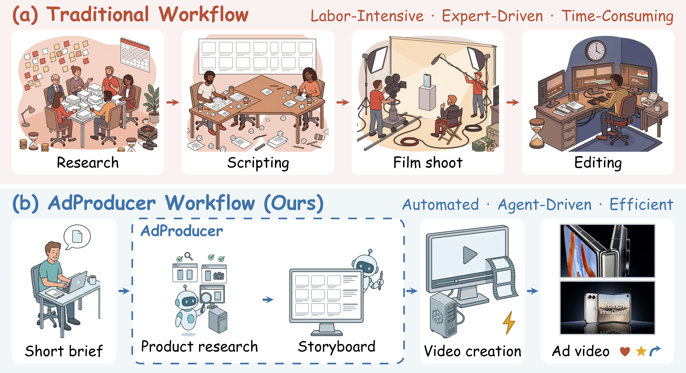
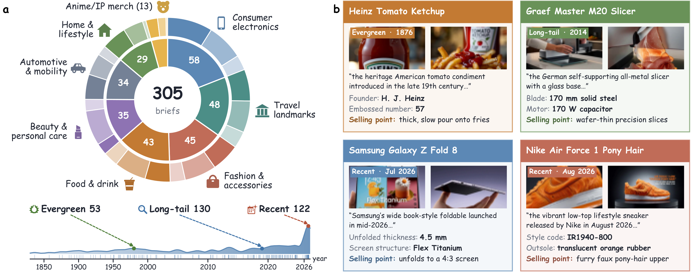

Give a Brief, See the product, Know the story. Make the ad.
A compelling ad starts with understanding what makes a product worth showing. AdProducer turns a short creative brief into a product-grounded visual story: it discovers and verifies real product information, retrieves official visual references, and crafts a shot-by-shot storyboard that brings the product's defining features into focus. A frozen video generator then brings that storyboard to life. AdProducer is opening new possibilities for the traditional advertising industry.

Every ad below is planned by AdProducer and rendered by MiniMax H3 or Veo 3.1. Click any video to discover the brief that started it all.
Five open text-to-video models prompted directly with the brief invent a plausible product. AdProducer finds the real one, and its selling point and facts reach the screen.
Baselines receive the same brief directly as the text prompt. All clips are shown without audio.
305 advertising briefs across eight domains, from 19th-century classics to products released weeks ago. Each brief comes with verified product facts, official images and a ground-truth ad, and is scored with PG-Score for product fidelity, factual accuracy and creative execution.

Ground-truth ads, rendered by MiniMax H3 from storyboards written with the verified facts.
AdCreation-Bench scores every ad twice, once for getting the product right and once as an advertisement, and a human study checks both. Click a dot to hide or show a method.
Product-grounded score: a Gemini 3.1 Pro judge compares the ad with the official images, verified facts and a ground-truth ad, checking the product, on-screen facts, selling point, shots and look.
Advertising score: an independent GPT-6 judge watches the ad without any ground truth and rates it as a commercial, from brief fidelity and product presentation to hook and purchase intent.
Raters score anonymized, randomly ordered clips on five-point scales for visual quality, product fidelity, informativeness, attitude toward the ad and purchase intention.
PG-Score dimensions in percent; Ad-Score dimensions on 1–5 (overall on 1–10); human ratings are mean opinion scores on 1–5. Numbers in the legends are the overall PG-Score and Ad-Score, and for the human study the mean of the five dimensions. Veo 3.1 rows are scored against a Veo 3.1 ground-truth ad.
@article{adproducer2026,
title = {AdProducer: Towards Agentic Advertising Video Generation},
author = {Anonymous},
year = {2026}
}